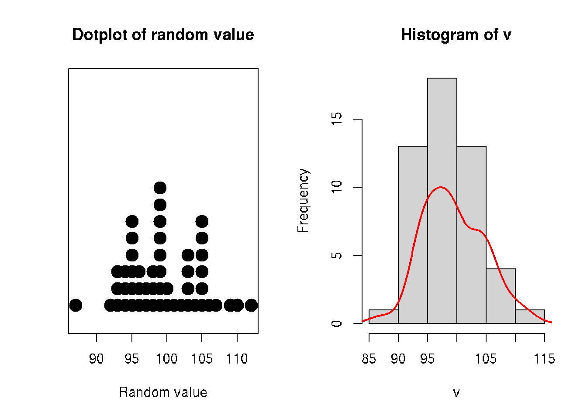

Chapter 21 Linear Regression
21.1 Generate Random Data Set a Linear Model
Suppose we want to simulate from the following linear model:
y = \(\beta\)0 + \(\beta\)1x + \(\epsilon\),
where \(\epsilon\) ~ N(0,22). Assume x ~ N(0,12), \(\beta\)0 = 0.5, \(\beta\)1 = 2.
set.seed(20)
x <-rnorm(100)
e <- rnorm(100, 0, 2)
y <- 0.5 + 2*x + e
summary(y)## Min. 1st Qu. Median Mean 3rd Qu. Max.
## -6.4084 -1.5402 0.6789 0.6893 2.9303 6.5052plot(x,y)
21.2 Linear regression - theory
Assume that there is approximately a linear relationship between X and Y:
\[ Y \approx \beta_0 + \beta_1X\]
where \(\beta\)0 is an intercept and \(\beta\)1 is a slope
Parameters of the line could be calculated using least squares methods:
\[\beta_1 = \frac{\sum_{i=1}^{n} (x_i - \bar{x})(y_i - \bar{y})}{\sum_{i=1}^{n}{(x_i - \bar{x})^2}} \] \[\beta_0 = \bar{y} - \beta_1\bar{x} \]
21.3 Practical example
Practical example from Wikipedia
Set of data: (1,6), (2,5), (3, 7), (4,10)

We have to find the line corresponding to the minimal sum of errors (distances from the each point to this line):
1. For all points:
\[\beta_1 + 1\beta_2 = 6\]
\[\beta_1 + 2\beta_2 = 5\]
\[\beta_1 + 3\beta_2 = 7\]
\[\beta_1 + 4\beta_2 = 10\]
the least squares S:
\[S(\beta_1, \beta_2) = [6 - (\beta_1 + 1\beta_2)]^2 + [5 - (\beta_1 + 2\beta_2)]^2 + [7 - (\beta_1 + 3\beta_2)]^2 + [10 - (\beta_1 + 4\beta_2)]^2 = 4\beta_1^2 + 30\beta_2^2 + 20\beta_1\beta_2 - 56\beta_1 - 154\beta_2 + 210\]
The minimum is:
\[\frac{\partial{S}}{\partial{\beta_1}} = 0 = 8 \beta_1 + 60\beta_2 - 154\]
\[\frac{\partial{S}}{\partial{\beta_2}} = 0 = 20 \beta_1 + 20\beta_2 - 56\]
Result in a system of two equations in two unkowns gives:
\[\beta_1 = 3.5\]
\[\beta_2 = 1.4\]
The line of best fit:
y = 3.5 + 1.4x
All possible regression lines goes through the intersection point \((\bar{x}, \bar{y})\)
21.4 Linear model in R
x <- c(1,2,3,4)
y <- c(6,5,7,10)
lm(y~x)##
## Call:
## lm(formula = y ~ x)
##
## Coefficients:
## (Intercept) x
## 3.5 1.421.5 Standard error of train data
\[MSE = \frac{1}{n}\sum_{i=1}^{n}(y_i - \hat{f}(x_i))^2\]
21.6 Standard error of learn data
\[MSE = \frac{1}{n_o}\sum_{i=1}^{n_o}(y_i^o - \hat{f}(x_i^o))^2\]
21.7 Practical examples for linear model regression
In this simple example we have 6 persons (3 males and 3 femails) and their score from 0 to 10.
We want to build a model to see the dependence of score on gender: score ~ gender + \(\epsilon\), where \(\epsilon\) is an error
# create data frame for the dataset
df = data.frame(gender=c(rep(0,3), rep(1,3)), score=c(10,8,7, 1,3,2))
df## gender score
## 1 0 10
## 2 0 8
## 3 0 7
## 4 1 1
## 5 1 3
## 6 1 2# build linear model
x = lm(score ~ gender, df)
summary(x)##
## Call:
## lm(formula = score ~ gender, data = df)
##
## Residuals:
## 1 2 3 4 5 6
## 1.667e+00 -3.333e-01 -1.333e+00 -1.000e+00 1.000e+00 1.110e-16
##
## Coefficients:
## Estimate Std. Error t value Pr(>|t|)
## (Intercept) 8.3333 0.7454 11.180 0.000364 ***
## gender -6.3333 1.0541 -6.008 0.003863 **
## ---
## Signif. codes: 0 '***' 0.001 '**' 0.01 '*' 0.05 '.' 0.1 ' ' 1
##
## Residual standard error: 1.291 on 4 degrees of freedom
## Multiple R-squared: 0.9002, Adjusted R-squared: 0.8753
## F-statistic: 36.1 on 1 and 4 DF, p-value: 0.00386321.8 Another example
##### LINEAR REGRESSION
# Linear regression model is a line y=ax+b, where sum of distances between all y=axi+b and given yi (sum of squares) is minimal.
# Example (from R Machine Learning by Example)
# Height and weight vectors for 19 children
height <- c(69.1,56.4,65.3,62.8,63,57.3,59.8,62.5,62.5,59.0,51.3,64,56.4,66.5,72.2,65.0,67.0,57.6,66.6)
weight <- c(113,84,99,103,102,83,85,113,84,99,51,90,77,112,150,128,133,85,112)
plot(height,weight)
cor(height,weight)## [1] 0.8848454# Fit linear model
model <- lm(weight ~ height) # weight = slope*weight + intercept
abline(model) # Regression line
# Get data of model
#get the intercept(b0) and the slope(b1) values
model##
## Call:
## lm(formula = weight ~ height)
##
## Coefficients:
## (Intercept) height
## -143.227 3.905# check all attributes calculated by lm
attributes(model)## $names
## [1] "coefficients" "residuals" "effects" "rank" "fitted.values" "assign" "qr" "df.residual" "xlevels"
## [10] "call" "terms" "model"
##
## $class
## [1] "lm"# getting only the intercept
model$coefficients[1] #or model$coefficients[[1]]## (Intercept)
## -143.2266# getting only the slope
model$coefficients[2] #or model$coefficients[[2]]## height
## 3.904675# checking the residuals
residuals(model)## 1 2 3 4 5 6 7 8 9 10
## -13.586376027 7.002990499 -12.748612814 1.013073510 -0.767861396 2.488783423 -5.272902901 12.184475869 -16.815524131 11.850836722
## 11 12 13 14 15 16 17 18 19
## -6.083169400 -16.672535926 0.002990499 -4.434222250 11.309132932 17.422789545 14.613440486 3.317381064 -4.824689703# predicting the weight for a given height, say 60 inches
model$coefficients[[2]]*50 + model$coefficients[[1]]## [1] 52.00709# detailed information about the model
summary(model)##
## Call:
## lm(formula = weight ~ height)
##
## Residuals:
## Min 1Q Median 3Q Max
## -16.816 -5.678 0.003 9.156 17.423
##
## Coefficients:
## Estimate Std. Error t value Pr(>|t|)
## (Intercept) -143.2266 31.1802 -4.594 0.000259 ***
## height 3.9047 0.4986 7.831 4.88e-07 ***
## ---
## Signif. codes: 0 '***' 0.001 '**' 0.01 '*' 0.05 '.' 0.1 ' ' 1
##
## Residual standard error: 10.89 on 17 degrees of freedom
## Multiple R-squared: 0.783, Adjusted R-squared: 0.7702
## F-statistic: 61.32 on 1 and 17 DF, p-value: 4.876e-07##### 2. Linear regression model for multiple parameters
df <- mtcars
# Subset of necessary data from mtcars
df.sub <- df[,c(1,3:7)]
# Linear regression model
fit <- lm(mpg ~ hp, df)
fit
summary(fit)
# Plot regression models using ggplot
# parameter geom_smooth builds regression model
library(ggplot2)
# auto model
ggplot(df, aes(hp, mpg))+geom_point(size=2)+geom_smooth()
# for linear model: method = 'lm'
ggplot(df, aes(hp, mpg))+geom_point(size=2)+geom_smooth(method = "lm")
# Split data into two groups by am - Transmission (0 = automatic, 1 = manual)
ggplot(df, aes(hp, mpg, col=factor(am)))+
geom_point(size=2)+
geom_smooth(method = "lm")
# Prediction of values using linear regression model
fitted_values_mpg <- data.frame(mpg=df$mpg, fitted=fit$fitted.values)
fitted_values_mpg
View(fitted_values_mpg)
# Lets predict galons of petrol for given horse powers
new_hp <- data.frame(hp=c(100, 150, 129, 300))
predict(fit, new_hp)
new_hp$mpg <- predict(fit, new_hp)
new_hp
# Lets make regression model for cylinders as numeric (not factor)
fit <- lm(mpg ~ cyl, df)
fit
# Regression line for cyclinders
ggplot(df, aes(cyl, mpg))+
geom_point()+
geom_smooth(method="lm")+
theme(axis.text=element_text(size=25),
axis.title=element_text(size=25, face="bold"))21.9 Linear regression modeling, compair with kNN
library('GGally')
library('lmtest')
library('FNN')
# константы
my.seed <- 12345
train.percent <- 0.85
# загрузка данных
fileURL <- 'https://sites.google.com/a/kiber-guu.ru/msep/mag-econ/salary_data.csv?attredirects=0&d=1'
# преобразуем категориальные переменные в факторы
wages.ru <- read.csv(fileURL, row.names = 1, sep = ';', as.is = T)
wages.ru$male <- as.factor(wages.ru$male)
wages.ru$educ <- as.factor(wages.ru$educ)
wages.ru$forlang <- as.factor(wages.ru$forlang)
# обучающая выборка
set.seed(my.seed)
inTrain <- sample(seq_along(wages.ru$salary),
nrow(wages.ru) * train.percent)
df.train <- wages.ru[inTrain, c(colnames(wages.ru)[-1], colnames(wages.ru)[1])]
df.test <- wages.ru[-inTrain, -1]
# Variable description
# salary – среднемесячная зарплата после вычета налогов за последние 12 месяцев (рублей);
# male – пол: 1 – мужчина, 0 – женщина;
# educ – уровень образования:
# 1 – 0-6 классов,
# 2 – незаконченное среднее (7-8 классов),
# 3 - незаконченное среднее плюс что-то ещё,
# 4 – законченное среднее,
# 5 – законченное среднее специальное, 6 – законченное высшее образование и выше;
# forlang - иност. язык: 1 – владеет, 0 – нет;
# exper – официальный стаж c 1.01.2002 (лет).
summary(df.train)
ggp <- ggpairs(df.train)
print(ggp, progress = F)
# цвета по фактору male
ggp <- ggpairs(df.train[, c('exper', 'male', 'salary')],
mapping = ggplot2::aes(color = male))
print(ggp, progress = F)
# цвета по фактору educ
ggp <- ggpairs(df.train[, c('exper', 'educ', 'salary')],
mapping = ggplot2::aes(color = educ))
print(ggp, progress = F)
# цвета по фактору forlang
ggp <- ggpairs(df.train[, c('exper', 'forlang', 'salary')],
mapping = ggplot2::aes(color = forlang))
print(ggp, progress = F)
# Linear regression model
model.1 <- lm(salary ~ . + exper:educ + exper:forlang + exper:male, data = df.train)
summary(model.1)
## Exclude uninfluencial parameters
# Exclude eper:educ as paramaeters are not important
model.2 <- lm(salary ~ . + exper:forlang + exper:male, data = df.train)
summary(model.2)
# Exclude male1:exper
model.3 <- lm(salary ~ . + exper:forlang, data = df.train)
summary(model.3)
# forlang1 is less important, has no sence
model.4 <- lm(salary ~ male + educ + exper, data = df.train)
summary(model.4)
df.train$educ <- as.numeric(df.train$educ)
df.test$educ <- as.numeric(df.test$educ)
model.6 <- lm(salary ~ ., data = df.train)
summary(model.6)
# Model 6 is week, let's add exper:male interactions
df.train$educ <- as.numeric(df.train$educ)
model.7 <- lm(salary ~ . + exper:male, data = df.train)
summary(model.7)
# Obviously the best decision is not to use interactions for modeling
# Test remainers
# тест Бройша-Пагана
bptest(model.6)
# статистика Дарбина-Уотсона
dwtest(model.6)
# графики остатков
par(mar = c(4.5, 4.5, 2, 1))
par(mfrow = c(1, 3))
plot(model.7, 1)
plot(model.7, 4)
plot(model.7, 5)
### Comparison with kNN-method
par(mfrow = c(1, 1))
# фактические значения y на тестовой выборке
y.fact <- wages.ru[-inTrain, 1]
y.model.lm <- predict(model.6, df.test)
MSE.lm <- sum((y.model.lm - y.fact)^2) / length(y.model.lm)
# kNN требует на вход только числовые переменные
df.train.num <- as.data.frame(apply(df.train, 2, as.numeric))
df.test.num <- as.data.frame(apply(df.test, 2, as.numeric))
for (i in 2:50){
model.knn <- knn.reg(train = df.train.num[, !(colnames(df.train.num) %in% 'salary')],
y = df.train.num[, 'salary'],
test = df.test.num, k = i)
y.model.knn <- model.knn$pred
if (i == 2){
MSE.knn <- sum((y.model.knn - y.fact)^2) / length(y.model.knn)
} else {
MSE.knn <- c(MSE.knn,
sum((y.model.knn - y.fact)^2) / length(y.model.knn))
}
}
# график
par(mar = c(4.5, 4.5, 1, 1))
plot(2:50, MSE.knn, type = 'b', col = 'darkgreen',
xlab = 'значение k', ylab = 'MSE на тестовой выборке')
lines(2:50, rep(MSE.lm, 49), lwd = 2, col = grey(0.2), lty = 2)
legend('bottomright', lty = c(1, 2), pch = c(1, NA),
col = c('darkgreen', grey(0.2)),
legend = c('k ближайших соседа', 'регрессия (все факторы)'),
lwd = rep(2, 2))Source
Course ‘Math modeling’ practical work, State University of Management, Moscow
21.10 More complex example
# Linear regression modeling, compair with kNN
# Source: Course 'Math modeling' practical work, State University of Management, Moscow
# link: https://sites.google.com/a/kiber-guu.ru/r-practice/home
library('GGally')
library('lmtest')
library('FNN')
# variable
my.seed <- 12345
train.percent <- 0.85
wages.ru <- read.csv("~/Projects/data_analysis/DATA/salary.csv", row.names = 1, sep = '\t',
as.is = T) # transform data into factors when possible
wages.ru$male <- as.factor(wages.ru$male)
wages.ru$educ <- as.factor(wages.ru$educ)
wages.ru$forlang <- as.factor(wages.ru$forlang)
# test data
set.seed(my.seed)
inTrain <- sample(seq_along(wages.ru$salary),
nrow(wages.ru) * train.percent)
df.train <- wages.ru[inTrain, c(colnames(wages.ru)[-1], colnames(wages.ru)[1])]
df.test <- wages.ru[-inTrain, -1]
summary(df.train)
ggp <- ggpairs(df.train)
print(ggp, progress = F)
# цвета по фактору male
ggp <- ggpairs(df.train[, c('exper', 'male', 'salary')],
mapping = ggplot2::aes(color = male))
print(ggp, progress = F)
# цвета по фактору educ
ggp <- ggpairs(df.train[, c('exper', 'educ', 'salary')],
mapping = ggplot2::aes(color = educ))
print(ggp, progress = F)
# цвета по фактору forlang
ggp <- ggpairs(df.train[, c('exper', 'forlang', 'salary')],
mapping = ggplot2::aes(color = forlang))
print(ggp, progress = F)
# Linear regression model
model.1 <- lm(salary ~ . + exper:educ + exper:forlang + exper:male, data = df.train)
summary(model.1)
## Exclude uninfluencial parameters
# Exclude eper:educ as paramaeters are not important
model.2 <- lm(salary ~ . + exper:forlang + exper:male, data = df.train)
summary(model.2)
# Exclude male1:exper
model.3 <- lm(salary ~ . + exper:forlang, data = df.train)
summary(model.3)
# forlang1 is less important, has no sence
model.4 <- lm(salary ~ male + educ + exper, data = df.train)
summary(model.4)
df.train$educ <- as.numeric(df.train$educ)
df.test$educ <- as.numeric(df.test$educ)
model.6 <- lm(salary ~ ., data = df.train)
summary(model.6)
# Model 6 is week, let's add exper:male interactions
df.train$educ <- as.numeric(df.train$educ)
model.7 <- lm(salary ~ . + exper:male, data = df.train)
summary(model.7)
# Obviously the best decision is not to use interactions for modeling
# Test remainers
# тест Бройша-Пагана
bptest(model.6)
# статистика Дарбина-Уотсона
dwtest(model.6)
# графики остатков
par(mar = c(4.5, 4.5, 2, 1))
par(mfrow = c(1, 3))
plot(model.7, 1)
plot(model.7, 4)
plot(model.7, 5)
### Comparison with kNN-method
par(mfrow = c(1, 1))
# фактические значения y на тестовой выборке
y.fact <- wages.ru[-inTrain, 1]
y.model.lm <- predict(model.6, df.test)
MSE.lm <- sum((y.model.lm - y.fact)^2) / length(y.model.lm)
# kNN требует на вход только числовые переменные
df.train.num <- as.data.frame(apply(df.train, 2, as.numeric))
df.test.num <- as.data.frame(apply(df.test, 2, as.numeric))
for (i in 2:50){
model.knn <- knn.reg(train = df.train.num[, !(colnames(df.train.num) %in% 'salary')],
y = df.train.num[, 'salary'],
test = df.test.num, k = i)
y.model.knn <- model.knn$pred
if (i == 2){
MSE.knn <- sum((y.model.knn - y.fact)^2) / length(y.model.knn)
} else {
MSE.knn <- c(MSE.knn,
sum((y.model.knn - y.fact)^2) / length(y.model.knn))
}
}
# график
par(mar = c(4.5, 4.5, 1, 1))
plot(2:50, MSE.knn, type = 'b', col = 'darkgreen',
xlab = 'значение k', ylab = 'MSE на тестовой выборке')
lines(2:50, rep(MSE.lm, 49), lwd = 2, col = grey(0.2), lty = 2)
legend('bottomright', lty = c(1, 2), pch = c(1, NA),
col = c('darkgreen', grey(0.2)),
legend = c('k ближайших соседа', 'регрессия (все факторы)'),
lwd = rep(2, 2))21.11 NEXT part
# Linear regression (part 1)
# Linear Regression (part 2)
x <- read.table("~/DataAnalysis/R_data_analysis/DATA/Diamond.dat", header=T)
# Check 3 models
# 1. ax+b
# 2. ax^2+b
# 3. ax^2+bx+c
res.1 <- lm(x[,2]~x[,1])
summary(res.1)
ves2 <- x[,1]*x[,1]
res.2 <- lm(x[,2]~ves2)
summary(res.2)
res.3 <- lm(x[,2]~x[,1]+ves2)
summary(res.3)
# weight of diamands ~ weight^2
plot(x[,1]~ves2)
# Conclusion: from 3 models, the 2d is optimal
### Временные ряды
ser.g.01 <- read.table("~/DataAnalysis/R_data_analysis/DATA/series_g.csv", header=T, sep=";")
# visual inspection
ser.g.01
dim(ser.g.01)
names(ser.g.01)
# plot vaiable
plot(ser.g.01$series_g, type="l")
log.ser.g <- log(ser.g.01$series_g)
plot(log.ser.g, type="l")
time. <- 1:(144+12)
month.01 <- rep(c(1,0,0,0,0,0,0,0,0,0,0,0), 12+1)
month.02 <- rep(c(0,1,0,0,0,0,0,0,0,0,0,0), 12+1)
month.03 <- rep(c(0,0,1,0,0,0,0,0,0,0,0,0), 12+1)
month.04 <- rep(c(0,0,0,1,0,0,0,0,0,0,0,0), 12+1)
month.05 <- rep(c(0,0,0,0,1,0,0,0,0,0,0,0), 12+1)
month.06 <- rep(c(0,0,0,0,0,1,0,0,0,0,0,0), 12+1)
month.07 <- rep(c(0,0,0,0,0,0,1,0,0,0,0,0), 12+1)
month.08 <- rep(c(0,0,0,0,0,0,0,1,0,0,0,0), 12+1)
month.09 <- rep(c(0,0,0,0,0,0,0,0,1,0,0,0), 12+1)
month.10 <- rep(c(0,0,0,0,0,0,0,0,0,1,0,0), 12+1)
month.11 <- rep(c(0,0,0,0,0,0,0,0,0,0,1,0), 12+1)
month.12 <- rep(c(0,0,0,0,0,0,0,0,0,0,0,1), 12+1)
log.ser.g[145:(144+12)] <-NA
ser.g.02 <- data.frame(log.ser.g, time., month.01, month.02, month.03,
month.04, month.05, month.06, month.07, month.08, month.09, month.10,
month.11, month.12)
ser.g.02
res.01 <- lm(log.ser.g ~ time. + month.02 + month.03 + month.04 +
month.05 + month.06 + month.07 + month.08 + month.09 + month.10 +
month.11 + month.12, ser.g.02)
summary(res.01)
res.01$fitted.values
plot(ser.g.02$log.ser.g, type="l")
lines(res.01$fitted.values)
plot(ser.g.02$log.ser.g, type="l", col="green")
lines(res.01$fitted.values, col="red")
x.lg = predict.lm(res.01, ser.g.02)
x.lg
plot(x.lg, type="l", col="red")
lines(ser.g.02$log.ser.g, col="green")
y <- exp(x.lg)
plot(y, type="l", col="red")
lines(ser.g.01$series_g, col="green")21.12 NEXT Part
# провести отбор оптимального подмножества переменных;
# отобрать предикторы методами пошагового включения и исключения;
# как построить ридж- и лассо-регрессию;
# как использовать снижение размерности: PCR и PLS;
# как применять эти методы в сочетании с кросс-валидацией.
library('ISLR') # набор данных Hitters
library('leaps') # функция regsubset() -- отбор оптимального
# подмножества переменных
library('glmnet') # функция glmnet() -- лассо
library('pls') # регрессия на главные компоненты -- pcr()
# и частный МНК -- plsr()
my.seed <- 1
?Hitters
fix(Hitters)
names(Hitters)
dim(Hitters)
sum(is.na(Hitters$Salary))
Hitters <- na.omit(Hitters)
dim(Hitters)
sum(is.na(Hitters$Salary))
## Отбор оптимального подмножества
# подгоняем модели с сочетаниями предикторов до 8 включительно
regfit.full <- regsubsets(Salary ~ ., Hitters)
summary(regfit.full)
# подгоняем модели с сочетаниями предикторов до 19 (максимум в данных)
regfit.full <- regsubsets(Salary ~ ., Hitters, nvmax = 19)
reg.summary <- summary(regfit.full)
reg.summary
# структура отчёта по модели (ищем характеристики качества)
names(reg.summary)
# R^2 и скорректированный R^2
round(reg.summary$rsq, 3)
# на графике
plot(1:19, reg.summary$rsq, type = 'b',
xlab = 'Количество предикторов', ylab = 'R-квадрат')
# сода же добавим скорректированный R-квадрат
points(1:19, reg.summary$adjr2, col = 'red')
# модель с максимальным скорректированным R-квадратом
which.max(reg.summary$adjr2)
### 11
points(which.max(reg.summary$adjr2),
reg.summary$adjr2[which.max(reg.summary$adjr2)],
col = 'red', cex = 2, pch = 20)
legend('bottomright', legend = c('R^2', 'R^2_adg'),
col = c('black', 'red'), lty = c(1, NA),
pch = c(1, 1))
# C_p
reg.summary$cp
# число предикторов у оптимального значения критерия
which.min(reg.summary$cp)
### 10
# график
plot(reg.summary$cp, xlab = 'Число предикторов',
ylab = 'C_p', type = 'b')
points(which.min(reg.summary$cp),
reg.summary$cp[which.min(reg.summary$cp)],
col = 'red', cex = 2, pch = 20)
# BIC
reg.summary$bic
# число предикторов у оптимального значения критерия
which.min(reg.summary$bic)
### 6
# график
plot(reg.summary$bic, xlab = 'Число предикторов',
ylab = 'BIC', type = 'b')
points(which.min(reg.summary$bic),
reg.summary$bic[which.min(reg.summary$bic)],
col = 'red', cex = 2, pch = 20)
# метод plot для визуализации результатов
?plot.regsubsets
plot(regfit.full, scale = 'r2')
plot(regfit.full, scale = 'adjr2')
plot(regfit.full, scale = 'Cp')
plot(regfit.full, scale = 'bic')
# коэффициенты модели с наименьшим BIC
round(coef(regfit.full, 6), 3)
## Отбор путём пошагового включения и исключения переменных
# Пошаговое включение
regfit.fwd <- regsubsets(Salary ~ ., data = Hitters, nvmax = 19, method = 'forward')
summary(regfit.fwd)
regfit.bwd <- regsubsets(Salary ~ ., data = Hitters,
nvmax = 19, method = 'backward')
summary(regfit.bwd)
round(coef(regfit.full, 7), 3)
round(coef(regfit.fwd, 7), 3)
round(coef(regfit.bwd, 7), 3)
### Нахождение оптимальной модели при помощи методов проверочной выборки и перекрёстной проверки
set.seed(my.seed)
train <- sample(c(T, F), nrow(Hitters), rep = T)
test <- !train
# обучаем модели
regfit.best <- regsubsets(Salary ~ ., data = Hitters[train, ],
nvmax = 19)
# матрица объясняющих переменных модели для тестовой выборки
test.mat <- model.matrix(Salary ~ ., data = Hitters[test, ])
# вектор ошибок
val.errors <- rep(NA, 19)
# цикл по количеству предикторов
for (i in 1:19){
coefi <- coef(regfit.best, id = i)
pred <- test.mat[, names(coefi)] %*% coefi
# записываем значение MSE на тестовой выборке в вектор
val.errors[i] <- mean((Hitters$Salary[test] - pred)^2)
}
round(val.errors, 0)
# находим число предикторов у оптимальной модели
which.min(val.errors)
### 10
# коэффициенты оптимальной модели
round(coef(regfit.best, 10), 3)
# функция для прогноза для функции regsubset()
predict.regsubsets <- function(object, newdata, id, ...){
form <- as.formula(object$call[[2]])
mat <- model.matrix(form, newdata)
coefi <- coef(object, id = id)
xvars <- names(coefi)
mat[, xvars] %*% coefi
}
# набор с оптимальным количеством переменных на полном наборе данных
regfit.best <- regsubsets(Salary ~ ., data = Hitters,
nvmax = 19)
round(coef(regfit.best, 10), 3)
# k-кратная кросс-валидация
# отбираем 10 блоков наблюдений
k <- 10
set.seed(my.seed)
folds <- sample(1:k, nrow(Hitters), replace = T)
# заготовка под матрицу с ошибками
cv.errors <- matrix(NA, k, 19, dimnames = list(NULL, paste(1:19)))
# заполняем матрицу в цикле по блокам данных
for (j in 1:k){
best.fit <- regsubsets(Salary ~ ., data = Hitters[folds != j, ],
nvmax = 19)
# теперь цикл по количеству объясняющих переменных
for (i in 1:19){
# модельные значения Salary
pred <- predict(best.fit, Hitters[folds == j, ], id = i)
# вписываем ошибку в матрицу
cv.errors[j, i] <- mean((Hitters$Salary[folds == j] - pred)^2)
}
}
# усредняем матрицу по каждому столбцу (т.е. по блокам наблюдений),
# чтобы получить оценку MSE для каждой модели с фиксированным
# количеством объясняющих переменных
mean.cv.errors <- apply(cv.errors, 2, mean)
round(mean.cv.errors, 0)
# на графике
plot(mean.cv.errors, type = 'b')
points(which.min(mean.cv.errors), mean.cv.errors[which.min(mean.cv.errors)],
col = 'red', pch = 20, cex = 2)
# перестраиваем модель с 11 объясняющими переменными на всём наборе данных
reg.best <- regsubsets(Salary ~ ., data = Hitters, nvmax = 19)
round(coef(reg.best, 11), 3)
# из-за синтаксиса glmnet() формируем явно матрицу объясняющих...
x <- model.matrix(Salary ~ ., Hitters)[, -1]
# и вектор значений зависимой переменной
y <- Hitters$Salary
### Гребневая регрессия
# вектор значений гиперпараметра лямбда
grid <- 10^seq(10, -2, length = 100)
# подгоняем серию моделей ридж-регрессии
ridge.mod <- glmnet(x, y, alpha = 0, lambda = grid)
# размерность матрицы коэффициентов моделей
dim(coef(ridge.mod))
## [1] 20 100
# значение лямбда под номером 50
round(ridge.mod$lambda[50], 0)
## [1] 11498
# коэффициенты соответствующей модели
round(coef(ridge.mod)[, 50], 3)
# норма эль-два
round(sqrt(sum(coef(ridge.mod)[-1, 50]^2)), 2)
# всё то же для лямбды под номером 60
# значение лямбда под номером 50
round(ridge.mod$lambda[60], 0)
# коэффициенты соответствующей модели
round(coef(ridge.mod)[, 60], 3)
# норма эль-два
round(sqrt(sum(coef(ridge.mod)[-1, 60]^2)), 1)
# мы можем получить значения коэффициентов для новой лямбды
round(predict(ridge.mod, s = 50, type = 'coefficients')[1:20, ], 3)
## Метод проверочной выборки
set.seed(my.seed)
train <- sample(1:nrow(x), nrow(x)/2)
test <- -train
y.test <- y[test]
# подгоняем ридж-модели с большей точностью (thresh ниже значения по умолчанию)
ridge.mod <- glmnet(x[train, ], y[train], alpha = 0, lambda = grid,
thresh = 1e-12)
plot(ridge.mod)
# прогнозы для модели с лямбда = 4
ridge.pred <- predict(ridge.mod, s = 4, newx = x[test, ])
round(mean((ridge.pred - y.test)^2), 0)
# сравним с MSE для нулевой модели (прогноз = среднее)
round(mean((mean(y[train]) - y.test)^2), 0)
# насколько модель с лямбда = 4 отличается от обычной ПЛР
ridge.pred <- predict(ridge.mod, s = 0, newx = x[test, ], exact = T,
x = x[train, ], y = y[train])
round(mean((ridge.pred - y.test)^2), 0)
# predict с лямбдой (s) = 0 даёт модель ПЛР
lm(y ~ x, subset = train)
round(predict(ridge.mod, s = 0, exact = T, type = 'coefficients',
x = x[train, ], y = y[train])[1:20, ], 3)
## Подбор оптимального значения лямбда с помощью перекрёстной проверки
# k-кратная кросс-валидация
set.seed(my.seed)
# оценка ошибки
cv.out <- cv.glmnet(x[train, ], y[train], alpha = 0)
plot(cv.out)
# значение лямбда, обеспечивающее минимальную ошибку перекрёстной проверки
bestlam <- cv.out$lambda.min
round(bestlam, 0)
## [1] 212
# MSE на тестовой для этого значения лямбды
ridge.pred <- predict(ridge.mod, s = bestlam, newx = x[test, ])
round(mean((ridge.pred - y.test)^2), 0)
## [1] 96016
# наконец, подгоняем модель для оптимальной лямбды,
# найденной по перекрёстной проверке
out <- glmnet(x, y, alpha = 0)
round(predict(out, type = 'coefficients', s = bestlam)[1:20, ], 3)
## Лассо
lasso.mod <- glmnet(x[train, ], y[train], alpha = 1, lambda = grid)
plot(lasso.mod)
# Подбор оптимального значения лямбда с помощью перекрёстной проверки
set.seed(my.seed)
cv.out <- cv.glmnet(x[train, ], y[train], alpha = 1)
plot(cv.out)
bestlam <- cv.out$lambda.min
lasso.pred <- predict(lasso.mod, s = bestlam, newx = x[test, ])
round(mean((lasso.pred - y.test)^2), 0)
# коэффициенты лучшей модели
out <- glmnet(x, y, alpha = 1, lambda = grid)
lasso.coef <- predict(out, type = 'coefficients', s = bestlam)[1:20, ]
round(lasso.coef, 3)
round(lasso.coef[lasso.coef != 0], 3)
### Лабораторная работа 3: регрессия при помощи методов PCR и PLS
### 6.7.1 Регрессия на главные компоненты
# кросс-валидация
set.seed(2) # непонятно почему они сменили зерно; похоже, опечатка
pcr.fit <- pcr(Salary ~ ., data = Hitters, scale = T, validation = 'CV')
summary(pcr.fit)
# график ошибок
validationplot(pcr.fit, val.type = 'MSEP')
# Подбор оптиального M: кросс-валидация на обучающей выборке
set.seed(my.seed)
pcr.fit <- pcr(Salary ~ ., data = Hitters, subset = train, scale = T,
validation = 'CV')
validationplot(pcr.fit, val.type = 'MSEP')
# MSE на тестовой выборке
pcr.pred <- predict(pcr.fit, x[test, ], ncomp = 7)
round(mean((pcr.pred - y.test)^2), 0)
# подгоняем модель на всей выборке для M = 7
# (оптимально по методу перекрёстной проверки)
pcr.fit <- pcr(y ~ x, scale = T, ncomp = 7)
summary(pcr.fit)
# Регрессия по методу частных наименьших квадратов
set.seed(my.seed)
pls.fit <- plsr(Salary ~ ., data = Hitters, subset = train, scale = T,
validation = 'CV')
summary(pls.fit)
# теперь подгоняем модель для найденного оптимального M = 2
# и оцениваем MSE на тестовой
pls.pred <- predict(pls.fit, x[test, ], ncomp = 2)
round(mean((pls.pred - y.test)^2), 0)
## [1] 101417
# подгоняем модель на всей выборке
pls.fit <- plsr(Salary ~ ., data = Hitters, scale = T, ncomp = 2)
summary(pls.fit)